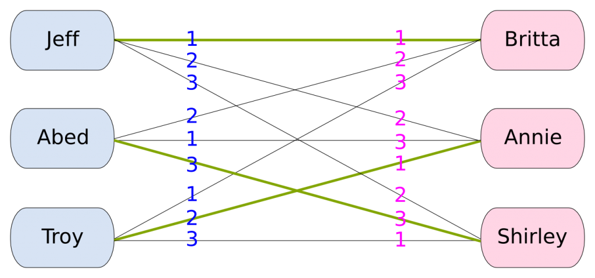
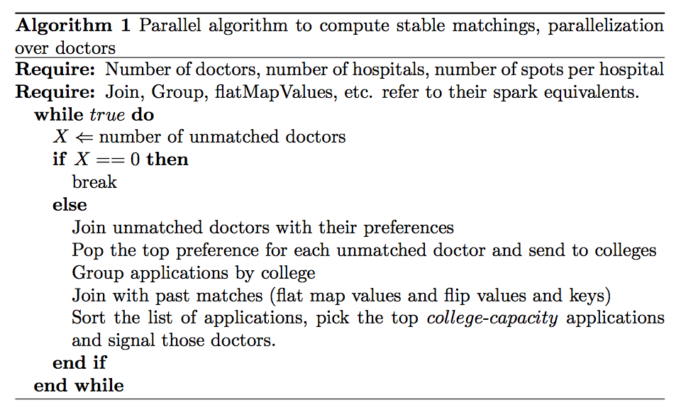
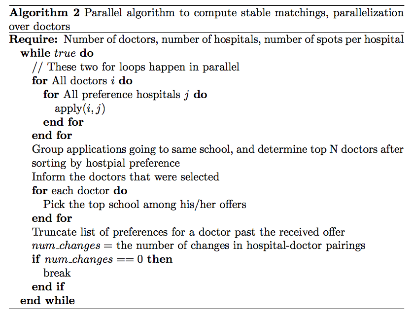

Problem
For our final project, we explored several problems in market design, a field of economics which concerns optimally matching two or more sets of agents who have preferences about the other. In particular, we are exploring the subset of market design problems known as “matching”. One of the central problems in matching is the “stable marriage” problem, in which there are N men and N women, each of which have an order of preferences over the other. The goal is to find N pairings such that there is no unpaired couple that both want each other more than their current partners. An example of a setup for such a problem, taken from here, can be found below:
Note that the red numbers represent the male preferences over the females, and the pick numbers the female preferences over the males. The bolded green lines are partnerships which form one example of a stable marriage.
There is a known serial algorithm to solve this known as the Gale-Shapley Algorithm. In this simple algorithm, the men who do not have a match yet propose to the women, and the women non-bindingly 'accept' the man who proposed to them that they prefer the most. This continues until every man has either proposed to their list of women or is matched to a woman. Its correctness (in terms of producing stable matchings, a term we will define below) can be argued succinctly by contradiction, and its termination in at most \(N^2\) iterations can be argued by noting that in the worst case every man proposes to every woman, a total of \(N^2\) events. Despite its simplicity, this algorithm has found hundreds of areas of application in theoretical and applied economics: including various public school system matchings, matchings of kidney donors with those in need, and many, many more. For these achievements, this algorithm garnered Gale and Shapley the Nobel prize.
An extension to this problem is used in the National Residency Match, a real process by which doctors finishing medical school get placed into American residency programs. In this set, each doctor has an ordering of preferences over some subset of the hospitals. Each hospital has an ordering over the doctors that apply there, and some number of spots. The goal is to again find a matching such that no unpaired (doctor, hospital) both want each other more than their current match. It is thought in the literature that this problem is solved using an adaptation of the serial Gale-Shapley algorithm.
Furthermore, we decided to explore the relatively new field of market design known as generalized matching. The overarching idea is that while we're negotiating who is matched with whom, we might as well also negotiate contracts between the two. An analogy to the stable marriage problem might be a situation where men might not want to marry some women as much as others, but are willing to be paid some large amount of money to be paired with a woman they might less prefer. Generalized matching in the context of the National Residency Match, then, would mean that rather than having preferences over each other, each doctor has a price they are willing to be paid to work at each hospital, and each hospital has a utility for each doctor, and we are trying to find the best assignment of doctors to hospitals such that each hospital maximizes its utility while keeping within its budget. Unfortunately, such problems, in which each agent has preferences not only over potential partners but also over contracts with those partners, quickly blow up in complexity. For examples of proposed solutions, algorithmic or otherwise, see seminal papers by Hatfield and Milgrom: Matching with Contracts and Echenique and Yenmez: A Solution to Matching with Preferences over colleagues.
We believe that the scale of these problems means that developing a scalable parallel algorithm will be useful. In particular, our project is focused on developing parallel Spark-based algorithms for solving the National Residency Match and related matching problems, such as the general problem of college admissions, and, as a reach goal, to work towards solutions for the matching with contracts problem, which has exponential complexity and no known sub-exponential solutions. In addition, these problems are genuinely important -- from the Boston public school system selection process to the process of choosing Harvard Business School courses to the National Kidney match (see What have we learned from Market Design, written by Nobel Prize winner Alvin Roth about the successes of market design as a field.)
Data Overview
Describe your data in detail: where did it come from, how did you acquire it, what does it mean, etc.
We discussed the problem with a Professor who does research in market design, which lead to our deciding to attempt to generate sample data for the National Residency Match. The data for our problem was modeled off of the parameters of the National Residency Match. We know from the match's publications that there are approximately 41,000 doctors that are matched to 5,000 hospitals to up to 30,000 spots. Thus, we generated data using these parameters. In particular, we generate a random set of preferences for each doctor, and for each hospital.
Thus, the input data representation essentially consistent of two files. There are N doctors and M hospitals, and each doctor can apply to up to numHospitalsPerDoctor hospitals.
1) doctor_preferences: N lines. Each line has an random permutation of numHospitalsPerDoctor hospital ids, each of which is between 0 and M - 1.
2) hospital_preferences: M lines. Each line has a random permutation of the doctors that applied there.
Program Design
There were many phases of our project. The first phase was to design a serial implementation for the Gale-Shapley algorithm that was as fast as possible, and to design a fast method to verify stability. While the algorithm is easy to find, including on Wikipedia, we wanted to do our best to make it as fast as possible, so that we were making a fair comparison between the parallel and serial implementations.
To accomplish this, we first had to design a technique to generate preferences for each doctor over hospitals, and for each hospital over the doctors that apply. Thus, we wrote a program that generates these preferences, given some set of size parameters, that we used to change the problem size and compare the implementation speeds. Essentially, given some parameters, this script would generate doctor_preferences.txt and hospital_preferences.txt, which are respectively, the preferences of each doctor and each hospital over each other.
Once we were satisfied that we had written a fast serial solver, we decided to work towards a parallel implementation. We chose to use Spark because it allows us to quickly scale this problem well, especially given that we were working with files that were enormous in size, and thus not best-suited for the other parallel techniques we explored.
The first Spark-based algorithm we wrote modeled Gale-Shapley, but parallelized the assignment of doctors to hospitals. As a reminder, the high level way that Gale-Shapley works is that each man proposes to the top-ranked woman that he has not yet proposed to, and if that man is higher ranked than the woman's current partner, he engages her. This process repeats until all of the men have tried each of their preferences, or are fully matched. Our parallel algorithm accomplishes this by proposing to all of the women in parallel. Then, each woman selects the top man among those that propose to her. The select men are now engaged. The rest repeat the process, but look at their next higher preference. This process ends once all of the unmatched men have tried all of their preferences. To apply this to the National Residency Match, the "man" is the "doctor" and the "woman" is the "hospital", and rather than each woman only being able to "engage" one man, each "hospital" can "accept" multiple "doctors". So, rather than taking the top-ranked doctor, each hospital will take the top K ranked doctors, where K is the number of spots in a hospital. A more formal description of our algorithm is below.
The proof of the correctness of this algorithm follows directly from Gale-Shapley: the order of proposals from doctors to hospitals within the confines of a particular round do not matter.
We found that this technique did not scale very well. On a Macbook Pro, we could not generate a dataset in which this beats the serial implementation. So, we decided to completely rethink how we approach this parallelization. After thinking hard, we realized that the reason this technique was slow was that it still required iterating over all of the preferences for the unmatched doctors. Thus, if there are 300 preferences, it would still require 300 iterations. So, we set out to design an algorithm that parallelized over not just the assignment of doctors to hospital for a set of preferences, but to parallelize over all of those preferences themselves.
This is exactly what we did. Our new algorithm is as follows, and is inspired by how we imagine this matching occurs in a college admissions process (albeit much faster!). Each doctor applies to all of her preferences at once. Then, each hospital picks the top N doctors among those that applied there, and send "acceptance letters" to the doctors. Then, each doctor picks his top-ranked hospital among the places he got accepted, and informs the hospitals of this decision. At this point, you can imagine that each doctor has gotten "tentatively accepted" to some hospital, or denied from all of this choices, and therefore "waitlisted". However, since some doctors may have rejected offers, a space may have opened up. So, we truncate the list of preferences for each doctor to only include the hospitals up until the one they were accepted to. So, if a doctor has the preferences Hosp1 > Hosp2 > Hosp3 > Hosp4, and get's into Hosp3, their new preferences would be Hosp1 > Hosp2 > Hosp3. Then, we repeat the process until there are no changes in the matchings. The intuition behind this is that each doctor will repeatedly try to get into a better hospital than the one they are currently in.
As an example of the list truncation: if a doctor had the following preferences: [3 5 1 6 2], and the best offer was for 1, the new preferences would be [3 5 1]. The proof of the stability of matches produced by this algorithm is as follows: examine any two matchings that were output by the algorithm, say of \(p_1\) to \(s_1\) and \(p_2\) to \(s_2\), where \(p\) and \(s\) represent people and schools, respectively. Assume for the sake of contradiction that \(p_1\) prefers \(s_2\) to \(s_1\), and \(s_2\) prefers \(p_1\). This is impossible, because \(s_2\) makes offers to the top \(N\) students, and made an offer to \(x_2\) but not \(x_1\) -- if \(s_2\) had made an offer to \(x_1\), \(x_1\) would have remained partnered with \(s_2\), which is a contradiction.
Critically, in this case we found that for N doctors, it took around log N iterations to reach stable matchings, and thus we could beat the serial implementation on even modestly sized datasets.
In the final phase of our project, we implemented generalized matching, the general class of market design problems we describe above. The idea behind this algorithm is very similar to that behind algorithm 2. However, instead of sorting a list of received proposals, we perform knapsack-style dynamic programming to maximize the utility of the hospital based on their budget and their utility function over doctors. Our dynamic programming was defined recursively as: $$ M(i,j) = \max(M(i - 1, j), M(i - 1, j - s_i) + v_i) $$ Where \(M(i,j)\) is the optimal value achievable when filling a knapsack of capacity \(j\) with some subset of the items \(1\ldots i\), each of which take up space (in our case cost some number of dollars) \(s_i\), and have value \(v_i\). Note that we are taking the max for every item of taking that item or not taking it. Hence the optimal solution is given by \(\max_j(M(n, j))\) where \(n\) is the number of items, or in our case the number of doctors with pending proposals to a given hospital. To eliminate function call overhead as well as stack allocation overhead, we implemented our knapsack dynamic programming in a completely cached top-down manner with backtracking to recover the optimal solution. Unfortunately, it is much more difficult to prove theoretical guarantees about knapsack dynamic programming, as opposed to the simple sorting which we used in algorithm 2. For this reason, we were unable to conclusively conclude much about the optimality of solutions produced by our algorithm. Morevoer, it isn't even clear what an optimal solution is in this situation: there is no precise equivalent to the stability condition here. This is in part because we assume that preferences are exchangeable. That is, we assume that every agent has their price -- a doctor may really, really prefer not to work at hospital \(x\), but if you pay them 100 million dollars, they'll take the job. A condition which does make sense to check here is pareto optimality. This game-theoretic condition essentially means that any change from the current state will make someone worse off, that is, there is no state of the world which is strictly better in every way. Unfortunately, in generalized matching this condition is exponentially difficult to check. However, despite these issues, as we will see below, we did see promising empirical results.
Usage
Usage of our programs is extremely simple -- everything goes through a straightforward Python CLI. To use this application, simply run the desired program (for example ParallelSpark-Fast.py) with the doctor preferences and hospital preferences files in the same folder. So, if this were to be used for the true National Residency Match, essentially the user would just have to move all of the data into the appropriate files, and then call the Python-based Spark program. Then, the program generates the matchings, and verifies that they are all stable. If required, a one-line addition can output the resultant matchings, as would likely be required. The only dependency is PySpark.
Insights and Performance
We found a number of interesting insights. For one, it suggests that for relatively small sized problems, Spark has enormous overhead in achieving its parallel behavior, lessening its utility on typically small problems. In particular, when operating Spark on a Macbook Pro with 4 cores, we found limited speedup in conducting the National Residency Match using Spark. However, once the size of the dataset got larger, the Spark-based algorithm very quickly caught up and overtook the serial implementation. This effect was only compounded by running things on a large AWS cluster.
Furthermore, our intuition about the most parallelizable aspect of this problem evolved over time. Earlier, our main expectation of what made this problem hard was the fact that there are thousands of doctors trying to be matched to thousands of hospitals, and thus being able to parallelize this process would quickly lead to a significant speedup. While this was true to some extent, we actually found that there was a huge deal of complexity caused by the potentially high number of hospitals that each doctor to apply to. When we increased the number of hospitals each doctor could apply to, we saw polynomial slowdown in the amount of time that the serial implementation took. Furthermore, when we wrote our second Spark-based algorithm which allowed each doctor to submit all of their choices at once, we got significant speedups, which makes sense since it mitigated for a single doctor making many applications.

The comparison between the parallel algorithm and the serial algorithm is striking. Really there is hardly a comparison to be made between the two -- at any nontrivial problem size the overhead of Spark and the extra overhead of our algorithm is overcome by the enormous scalability of our algorithm. Note that all of our data was obtained by running our code on AWS, on a four-node m3.large cluster.

These results surprised us quite a bit, as we expected the overhead of using Spark to mean that only on enormous problem sizes would our approach actually reap significant benefits. We believe that the sheer scalability of our algorithm was behind this.
Our results in the generalized matching situation were far less clear cut. We found that in this situation our program would frequently get stuck in cycles, updating a similar number of doctors for many iterations in a row, or something seemingly infinitely. As you can see in the graph below (TODO: add), this effect was rather consistent for similar problem sizes. It is clear from the matchings output by our algorithm that it is producing reasonable results, but it is not clear why we see these cycles. We think this may have something to do with the existence of permutations of local minima being repeatedly discovered by our knapsack algorithm. However, is it unclear to us exactly what's going on there, and as we shall mention below this is one of the primary focuses of our ongoing reserach on the subject.
Extensions
There is still much more work to be done on our project. We are still working intensely on both proving theoretical guarantees about the runtime of our generalized matching logic and on improving the empirical methods for doing these matchings. We are also seeking to develop better metrics for determining the quality of these matchings, namely something which could be computed much more rapidly than Pareto optimality. We are actively collaborating with researchers in economics -- hopefully our work will actually be used in real-world systems! We are also actively hoping to publish our work in a journal of economic computation.
Takeaways
We both found working on this project to be extremely enjoyable. As blockmates who live just down the hall from each other, we were able to spenda good amount of free time pair coding and just tossing around ideas about our project. Getting our algorithms to finally scale the way we wanted them to after a such a huge amount of effort was also extremely satisfying. We found the Spark UI to be extremely friendly and instrumental in our debugging process regarding Spark-specific caching, materialization, and laziness issues.
We definitely found, as we began to see in some of the earlier problem sets, that working in a cluster-computing environment requires deeply understanding the parts of the problem where the serial implementation is leading to the most computation complexity that can be parallelized, and focusing on rethinking that approach. Moreover, we found that even when some parts of serial algorithms can be clearly parallelized, this technique does not necessarily lead to great parallel algorithms, and instead fundamental aspects of the algorithmic design need to be rethought and challenged. Thinking about how to rethink algorithms from the ground up - many of which have been highly studied for decades - so that they can be very efficiency implemented in a parallel environment was definitely the most challenging part.
The most frustrating part was thinking through the nuances of Spark to make sure that any potential slowdown in operation was due to fundamental complexity, and not due to suboptimal caching or premature materialization. Spark provides ample opportunity to mess things like this up -- we had to be extremely careful about correctly co-partitioning our data and doing thorough experimentation surrounding the number of partitions to use, as well as other hyper-parameters to our program.
Next time, rather than first thinking about serial implementations and trying to adapt them in a parallel way, we might try to start from the ground up on these approaches. That would allow us to think about the problem space with a Parallel-first mindset, and likely get us to the true solution even faster: for a while, we felt stuck in the paradigm of thinking implied by Gale Shapley.